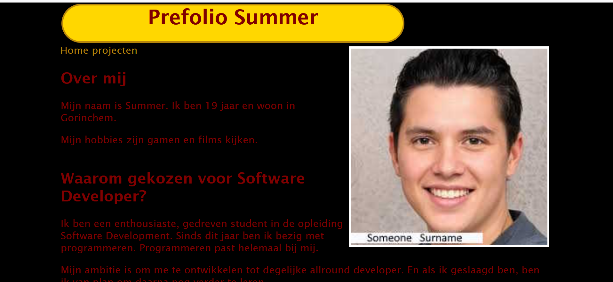
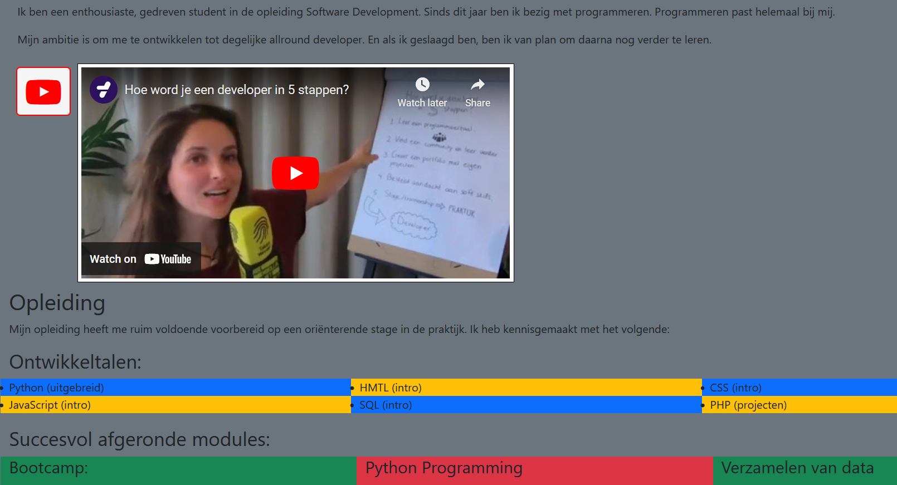
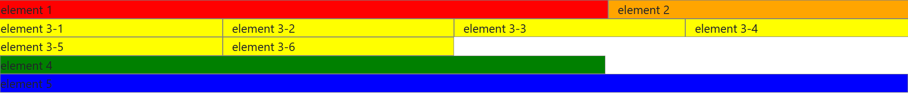
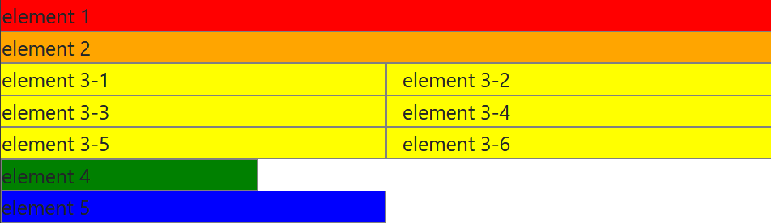
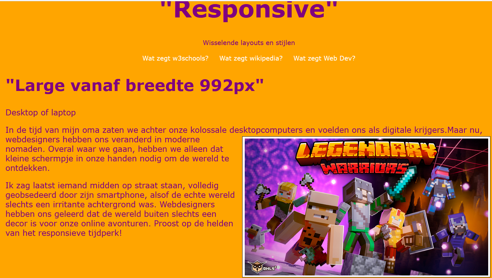
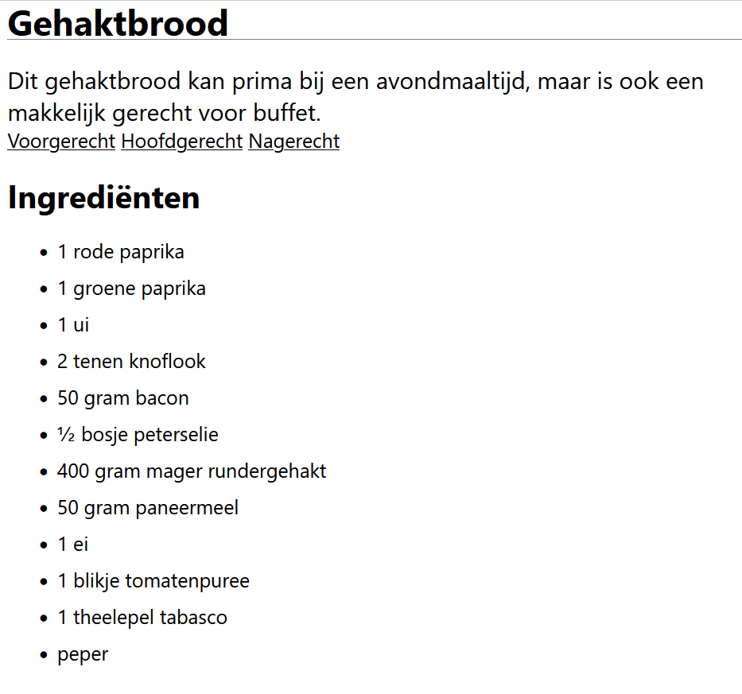

Ik heb de meta viewport-tag toegevoegd om de viewport-instellingen voor responsiviteit in te schakelen. Ik heb mijn portofolio gemaakt voor met HTML en CSS om een strakke en stijlvolle webpagina te creëren. In de HTML heb ik de structuur van de pagina vastgelegd. Voor de stijl en opmaak heb ik CSS toegepast. Ik koos kleuren, lettertypen en voegde marges, padding toe.
Ook heb ik media queries gebruikt, zodat de lay-out responsief is op verschillende schermformaten. Ik voegde afbeelding-elementen en video-elementen toe om wat dynamiek toe te voegen. Ook heb ik hier een lijst aan de pagina toegevoegd. Ik heb een navigatiebalk met hyperlinks gebruikt om tussen verschillende delen van mijn portfolio te navigeren.
Wat ik hier heb gedaan is dat ik de prefolio heb omgezet naar bootstrap, waardoor ik gemakkelijk responsieve elementen kon toevoegen. Ik heb FontAwesome-icons gebruikt om pictogrammen toe te voegen aan mijn navigatiemenu (Home en Projecten). Ik heb specifieke stijlen toegepast op de YouTube-play en robotarm iconen () voor een meer opvallende weergave. De pagina is gestructeerd met behulp van rows en columns in een container-fluid layout. Ik heb verschillende kleurenthema's gebruikt (bg-secondary, bg-dark, bg-primary, enz.) wat een samenhangende uitstraling geeft aan verschillende secties.
Dit is ook gekoppeld met bootstrap waardoor er gebruik van gemaakt worden van de grid-layout. Ik heb de Bootstrap grid classes gebruikt om een eenvoudige layout te creëren. Er zijn drie div-containers met de klassen row en verschillende kolomklassen (col-sm, col-md, col-lg) om de elementen op verschillende schermgroottes te plaatsen.
 Ik heb de meta viewport-tag toegevoegd om de viewport-instellingen voor responsiviteit in te schakelen. IK heb verschillende secties gemaakt (large, medium, small, tiny), en elke sectie is getagd met een class die wordt gebruikt voor de responsive opmaak. Ik heb media queries toegevoegd om de opmaak van de pagina aan te passen op verschillende schermgroottes.
Ik heb hyperlinks gebruikt om tussen verschillende recepten te navigeren. Ik heb de gehele pagina gecentreerd met 'margin: 0 auto'. De recepttitel heeft een onderste rand. Ik maak hier gebruik van twee verschillende lijstitems (ul, ol). De footer heeft een achtergrondkleur, padding, afgeronde hoeken en marge. De tip binnen de footer wordt vetgedrukt met behulp van een class.
